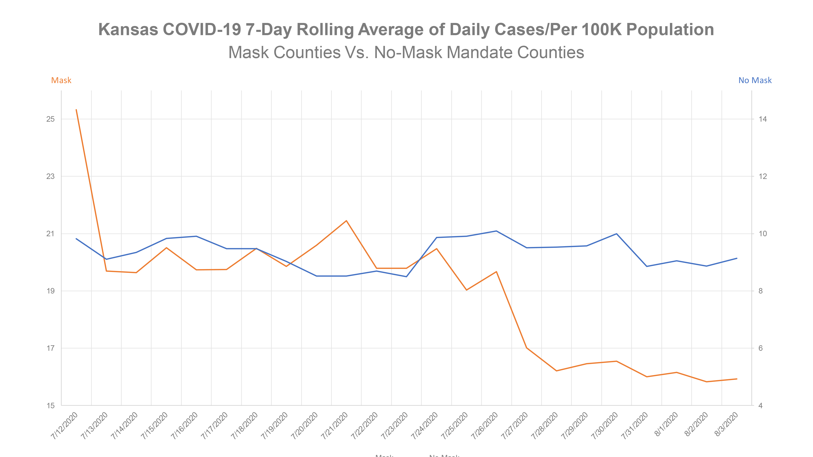

1Estudiante de pregrado de la carrera de Diseño, Universidad de Chile, Santiago, Chile
2Estudiante de pregrado de la carrera de Diseño, Universidad de Chile, Santiago, Chile
3Estudiante de pregrado de la carrera de Diseño, Universidad de Chile, Santiago, Chile
4Estudiante de pregrado de la carrera de Diseño, Universidad de Chile, Santiago, Chile
5Estudiante de pregrado de la carrera de Diseño, Universidad de Chile, Santiago, Chile
Recibido 10 de marzo, 2026
Aceptado 31 de marzo, 2026
Publicado 7 de abril, 2026
Acceso Abierto
Resumen
Introducción: La pandemia del COVID-19 consolidó a las visualizaciones digitales como fuentes de verdad en los contextos de incertidumbre. Allí el diseño de información tomó un rol crítico donde representaciones distorsionadas fueron capaces de perturbar la percepción del riesgo social e influenciar en decisiones apresuradas basadas en datos manipulados.
Objetivo: Este artículo tiene como objetivo analizar la manipulación visual de datos epidemiológicos realizada por el Departamento de Salud de Kansas en 2020. Se busca deconstruir cómo el uso intencionado de escalas inconsistentes y jerarquías visuales engañosas funciona como un mecanismo de desinformación que traiciona la confianza pública y la ética del diseño.
Métodos: Para esto se empleó un paradigma cualitativo-analítico mediante deconstrucción semiótica y análisis de contenido visual. Basándose en los principios de Schwabish (2021), se ejecutó una auditoría de escalas en el eje de ordenadas, un examen de jerarquías visuales y una evaluación ética bajo los conceptos de la jerarquía DIKW y Cheap Fakes.
Resultados: Se identificó una distorsión deliberada en el eje vertical (Y), el cual carece de progresión aritmética constante para favorecer una narrativa política específica. Esta técnica generó una ilusión óptica de eficacia en ciertas medidas sanitarias. Se propone un gráfico de líneas normalizado con escala lineal continua para restaurar la integridad informativa. La visualización en crisis es un acto político y ético.
Conclusión: El caso Kansas demuestra que la manipulación de escalas distorsiona el flujo de la pirámide DIKW, impidiendo que el dato se transforme en sabiduría colectiva.
Palabras clave
Visualización de DatosDesinformaciónDIKWCovid-19Kansas
1 · Introducción
La pandemia del COVID-19 ocurrida desde finales del año 2019, transformó significativamente la manera en la que nos relacionamos con el mundo digital y los datos que nos proporciona este mismo. En un contexto de incertidumbre donde el enemigo era invisible, la gente empezó a tomar medidas de prevención conforme a los datos proporcionados por los medios de visualización digitales, puesto estos eran la única fuente de información disponible en el momento. Estas visualizaciones permitieron a millones de personas interpretar y entender la situación actual para poder tomar decisiones de cuidado personales y de sus familias.
Conforme con el avance de la pandemia la población en general comenzó a visualizar cada vez más representaciones visuales de datos epidemiológicos, asumiendo su veracidad por los medios en los que se compartían. El diseño empezó a tomar un rol crítico en cómo se mostraban estos datos a la población, ya que una representación gráfica distorsionada podía perturbar gravemente la visualización de riesgo y generar percepciones erróneas de datos.
Es por esto que en el presente artículo se mostrará una noticia donde la representación visual de los datos fue manipulada por quienes la presentaron, el departamento de salud y medioambiente de Kansas.
2 · Marco Teórico
Para comprender la distorsión de los datos en el caso de Kansas, es de suma importancia establecer un marco conceptual que vincule la ciencia de la información con la ética del diseño visual. La construcción del conocimiento de información no es un proceso automático ni mucho menos sencillo, sino un camino vulnerable a distorsiones deliberadas por manos que buscan su conveniencia.
2.1 La Jerarquía DIKW y el Flujo de la Información
El modelo DIKW (sigla en inglés para Data, Information, Knowledge, Wisdom / Datos, Información, Conocimiento, Sabiduría) propone una estructura piramidal donde los Datos constituyen la base primordial de símbolos y registros. Según Martin Frické , "The vision is that of a human asking a question beginning with, perhaps, 'who,' 'what,' 'where,' 'when,' or 'how many' and the data is processed into an answer to an enquiry. When this happens, the data becomes 'information'" (Frické, 2019, p. 34). Por lo que la Información surge cuando estos datos se contextualizan para responder preguntas fundamentales. El Conocimiento aparece al integrar esa información en marcos de aplicación práctica, y finalmente la Sabiduría representa el nivel superior de discernimiento ético y juicio crítico. En el contexto de la pandemia, una visualización de datos defectuosa no solo entrega mala información, sino que corrompe la capacidad de la persona para alcanzar la sabiduría necesaria en la gestión de su propio riesgo.
2.2 Alfabetización Estadística y Retórica Visual
La visualización de datos no es una herramienta neutral; es un acto de retórica visual, es decir el uso de imágenes y elementos gráficos para comunicar mensajes persuasivos, poéticos o impactantes que van más allá del significado literal. Como señala Schwabish (2021, p. 16) “-thinking carefully about how data is presented is just as important as the data itself.” El diseño de información implica decisiones críticas sobre escalas, ejes y jerarquías que determinan la recepción del mensaje. La efectividad de estas gráficas descansa en la alfabetización estadística de la población: la capacidad de interpretar y analizar críticamente los datos. La evidencia sugiere que, ante la complejidad de los datos epidemiológicos, la audiencia tiende a confiar en la "autoridad de la imagen", lo que permite que decisiones de diseño, como el recorte de ejes o la alteración de escalas, pasen desapercibidas, transformando la visualización en un instrumento de persuasión más que de instrucción.
2.3 De la Post-verdad a los "Cheap Fakes"en el Diseño
En el ecosistema digital actual, el concepto de Post-verdad significa sencillamente que los hechos objetivos de una dada situación influyen menos en la opinión pública que las emociones o las creencias personales. Bajo este marco emergen los Cheap Fake, a diferencia de las manipulaciones tecnológicas complejas, los cheap fakes consisten en alteraciones de bajo costo técnico pero de alto impacto cognitivo. En el ámbito de la estadística, esto se manifiesta mediante el uso de escalas inconsistentes, la omisión de variables de control o la presentación de datos sin contexto. Estas prácticas crean una línea difusa entre la información y la desinformación, aprovechando la apariencia de objetividad técnica para dirigir la opinión pública hacia una dirección clara, comprometiendo así la responsabilidad social que el diseño de información debe garantizar en la esfera pública.
2.4 La Ética en el Diseño de Información
Finalmente, el diseño de información debe entenderse como un acto ético. El diseñador no es un decorador de cifras, sino un mediador de información sensible. La elección de un color, el grosor de una línea o el punto de origen de un eje son decisiones con implicaciones políticas. La transparencia y la honestidad visual son, por tanto, requisitos para el ejercicio de un diseño que aspire al compromiso social y la salud pública.
Este enfoque permite identificar no solo los errores técnicos, sino las intencionalidades subyacentes en la manipulación de la percepción pública mediante el diseño.
3 · Materiales y Métodos
La presente investigación se inscribe en el paradigma cualitativo-analítico, empleando el análisis de contenido visual y la deconstrucción semiótica como herramientas principales para evaluar la integridad comunicativa en la visualización de datos. El objeto de estudio es el gráfico "Kansas COVID-19 7-Day Rolling Average of Daily Cases Per 100K Population", publicado por el Departamento de Salud y Medio Ambiente de Kansas (KDHE) en 2020. (Figura 1).
Para el análisis, se aplicaron los cinco principios fundamentales de visualización de datos propuestos por Schwabish (2021): mostrar los datos de forma íntegra, reducir el ruido visual, integrar texto y gráfica, evitar estructuras confusas y utilizar el color de manera estratégica. La metodología se dividió en tres fases:
1. Auditoría de Escalas y Ejes:
Evaluación de la coherencia entre los valores numéricos de los datos epidemiológicos y su representación espacial en el eje de las ordenadas (Y).
2. Análisis de Jerarquías Visuales:
Como el uso de colores y etiquetas influye en la atención del espectador.
3. Evaluación Ética y Fenomenológica:
Reflexión sobre la construcción de la "verdad visual" en el contexto de la pandemia, analizando si la gráfica cumple con la función de transformar datos en conocimiento útil o si, por el contrario, fomenta la desinformación bajo la categoría de Cheap Fake.

Figura 1. Grafico compartido por Rachel Maddow en Twitter y emitido en directo en el programa The Rachel Maddow Show el 6 de agosto de 2020.
Este enfoque permite identificar no solo los errores técnicos, sino las intencionalidades subyacentes en la manipulación de la percepción pública mediante el diseño.
4 · Resultados
El análisis del gráfico de Kansas revela una distorsión deliberada de la realidad epidemiológica mediante el uso de ejes y escalas inconsistentes. Se observa que el eje vertical (Y) no mantiene una progresión aritmética constante; mientras que en la parte inferior los intervalos representan incrementos menores, en la sección superior se comprimen valores significativamente mayores sin una justificación estadística. Esta técnica visual genera la ilusión óptica de que la curva de contagios en los condados con mandato de mascarilla se encuentra por debajo de aquellos sin mandato, cuando los valores absolutos sugieren una realidad distinta.
Ante este caso, se presenta una propuesta de visualización en forma de “Gráfico de líneas”, el cual posee una escala continua la cual emerge desde un punto cero, evitando así exageraciones de los datos y confusiones al momento de interpretar el gráfico, permitiendo al usuario discernir la efectividad de las políticas sanitarias sin enfrentar sesgos proyectados por el emisor.
Figura 2. El comentario de Steven Strogatz en Twitter muestra una recreación de un gráfico que representa el número de casos diarios de COVID-19 por cada 100.000 habitantes en Kansas.
5 · Discusión
Al contrastar los resultados con el modelo DIKW (Data-Information-Knowledge-Wisdom), se observa una ruptura deliberada en la cadena de valor del dato. Según Frické (2009), la información debe ser capaz de proporcionar respuestas a preguntas de "quién", "qué", "dónde" y "cuándo". Sin embargo, en este caso, la manipulación de la escala en el eje Y transforma el dato en lo que la literatura contemporánea denomina un Cheap Fake: una alteración de bajo costo técnico, pero que genera un impacto cuyo propósito es generar una respuesta en el espectador ya pensada por quienes realizaron el diseño.
Desde la teoría del diseño de información, la elección de una escala no aritmética para comparar dos grupos (condados con y sin mandato de mascarilla) no es un error de visualización, sino una estrategia de oscurecimiento. Como señala Schwabish (2021), la integridad de una gráfica reside en su capacidad de permitir comparaciones visuales que reflejen fielmente las magnitudes numéricas. Al comprimir visualmente los datos de los condados con mandato, se genera una "mentira gráfica" que subvierte la función social del diseño: en lugar de reducir la incertidumbre en un contexto de pandemia, se utiliza la autoridad de la visualización técnica para validar un sesgo político-administrativo.
Esta práctica plantea un dilema ético profundo sobre la alfabetización estadística. La población, en su búsqueda de certezas ante un enemigo invisible, otorga una confianza heurística a las representaciones gráficas emitidas por organismos oficiales. Cuando estas instituciones utilizan jerarquías visuales engañosas, no solo desinforman, sino que erosionan la confianza en la ciencia y el diseño como herramientas de verdad. Por tanto, la discusión no debe limitarse a la corrección técnica de los ejes, sino a la necesidad de un compromiso deontológico del diseñador, quien debe actuar como un guardián de la transparencia informativa en la era de la post-verdad.
6 · Conclusiones
La visualización de datos en tiempos de crisis no es un acto técnico neutral, sino un ejercicio de responsabilidad ética y política. El caso analizado demuestra que el diseño, cuando se aleja de su compromiso ético con la verdad, se convierte en un instrumento de propaganda capaz de comprometer la salud pública a través de la desinformación visual o Cheap Fakes. La manipulación de escalas en el gráfico de Kansas no es un error de ejecución, sino una falla en la ética del diseño que distorsiona el flujo en la pirámide DIKW (Datos, Información, Conocimiento, Sabiduría). Impidiendo facilitar la transición del dato al conocimiento, la gráfica analizada ancla al espectador en una interpretación errónea, impidiendo alcanzar la sabiduría necesaria para la toma de decisiones colectivas.
Desde la perspectiva del diseño como disciplina crítica, es necesario que las instituciones públicas adopten estándares de transparencia visual. La alfabetización visual de la población debe ser una prioridad de comunicación social, permitiendo que la ciudadanía actúe como un ente reflexivo frente a la información que consume. En conclusión, la democratización de los datos sólo es posible si el diseño actúa como un mediador honesto, garantizando que la representación de la realidad sea sino una herramienta de conocimiento y sabiduría.
Referencias
Engledowl, C., & Weiland, T. (2021). Visualizing COVID-19 Data from Kansas: Case Studies in Data Literacy. Journal of Statistics and Data Science Education, 29(sup1), S100–S107. https://doi.org/10.1080/26939169.2021.1915215
Frické, M. H. (s.f.). Data-Information-Knowledge-Wisdom (DIKW) Pyramid, Framework, Continuum. University of Arizona.
Frické, M. (2009). The knowledge pyramid: a critique of the DIKW hierarchy. Journal of Information Science, 35(2), 131-142. https://doi.org/10.1177/0165551508094050
Frické, M. (2019). The knowledge pyramid: The DIKW hierarchy. Knowledge Organization, 46(1), 33–46. https://doi.org/10.5771/0943-7444-2019-1-33
Google. (2024). Gemini (Versión 3 Flash) [Modelo de lenguaje extenso]. IA entrenada y usada para la realización de este articulo https://gemini.google.com/gem/1odQZ0CGPJFV8WYLW2w1KQfdVtwz_tNon?usp=sharing
Kansas COVID-19 7-Day Rolling Average of Daily Cases/Per 100K Population: Mask Counties Vs. No-Mask Mandate Counties [Gráfico de visualización de datos]. (2020).
Peters, M. A., Jandrić, P., & Green, B. J. (2024). The DIKW Model in the Age of Artificial Intelligence. Postdigital Science and Education. https://doi.org/10.1007/s42438-024-00462-8
Schwabish, J. (2021). Better Data Visualizations: A Guide for Scholars, Researchers, and Wonks. Columbia University Press. 16-47.
Declaraciones
Correspondencia
Isidora Cordova, Universidad de Chile ; Grace Lopez, Universidad de Chile ; Sofia Romo, Universidad de Chile ; Bianca Olivares, Universidad de Chile ; Mirrayn Tapia, Universidad de Chile
Conflicto de intereses Los autores declaran no tener conflictos de interés, solo una profunda estima por el equipo docente; no obstante, son plenamente conscientes de que dicha estima no constituye una variable computable en la rúbrica de evaluación, la cual se rige por criterios objetivos.